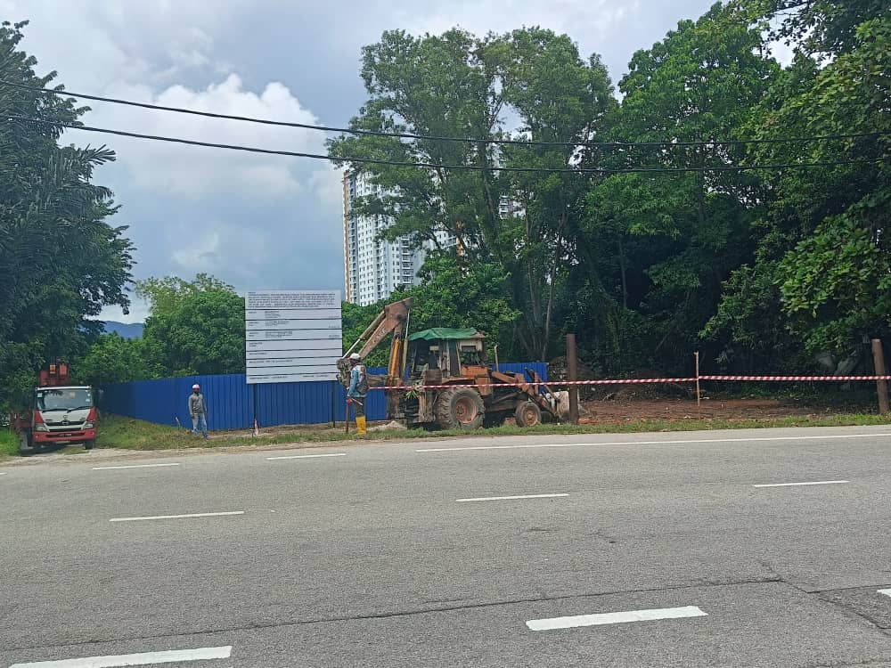
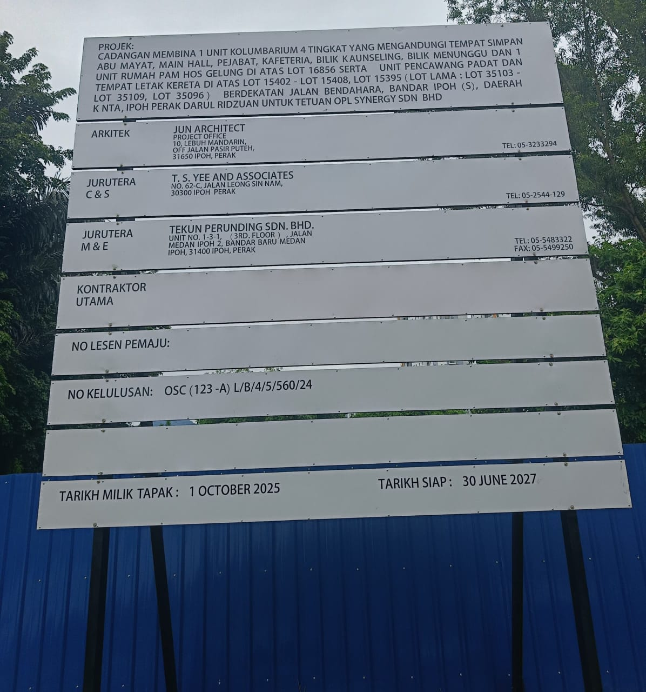

Our Portfolio
Ongoing Projects
Active development of a landmark columbarium facility in the heart of Ipoh, Perak.
Ipoh City Columbarium
A landmark 4-storey columbarium development located off Jalan Bendahara, Ipoh, set across a fully landscaped 4-acre site. The facility will include a main hall, offices, cafeteria, counselling rooms, waiting areas, and ample parking — designed to offer families a serene and dignified resting place for their loved ones.
Location
Off Jalan Bendahara, Ipoh, Perak
Site Area
4 Acres (Fully Landscaped)
Construction in Progress — Site Works Ongoing
Ipoh City Columbarium — Work in Progress
On-site progress.


Interested?
Reserve your niche or discuss
an investment partnership today.
Our team is ready to guide you through niche availability, pricing, and investment structures — with care and without obligation.